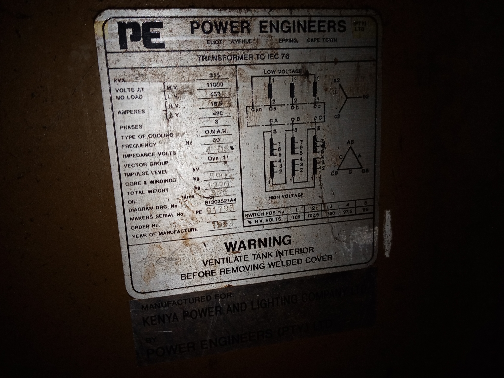
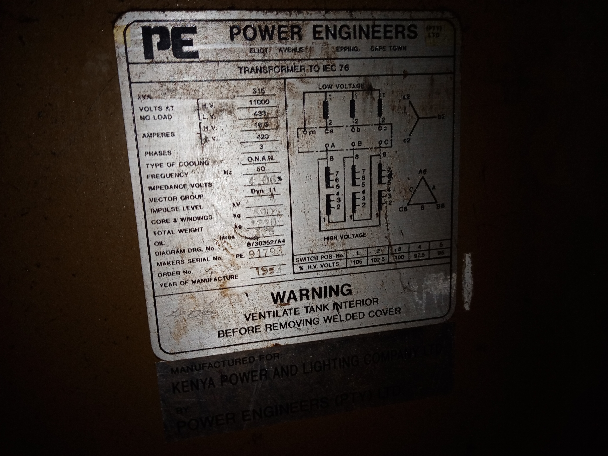
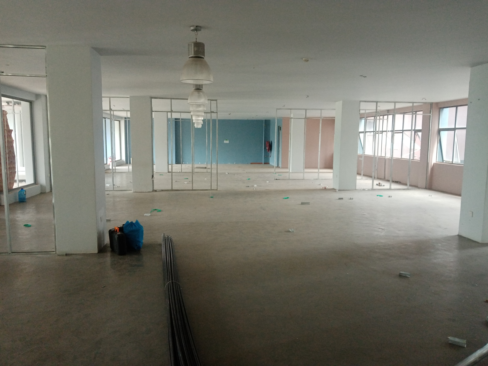
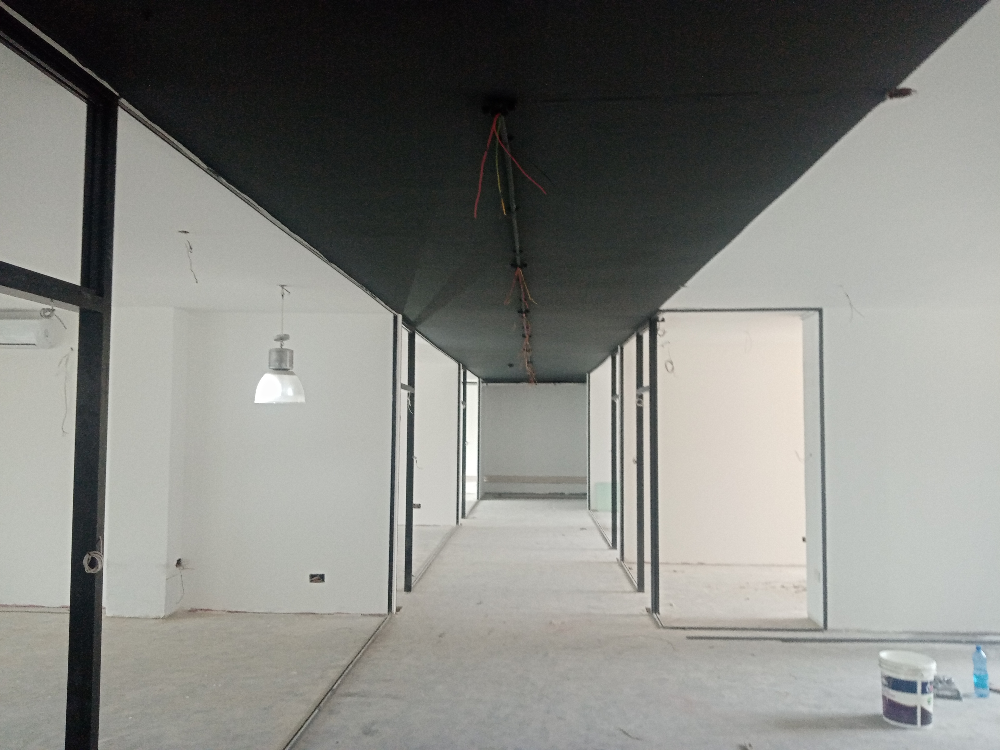
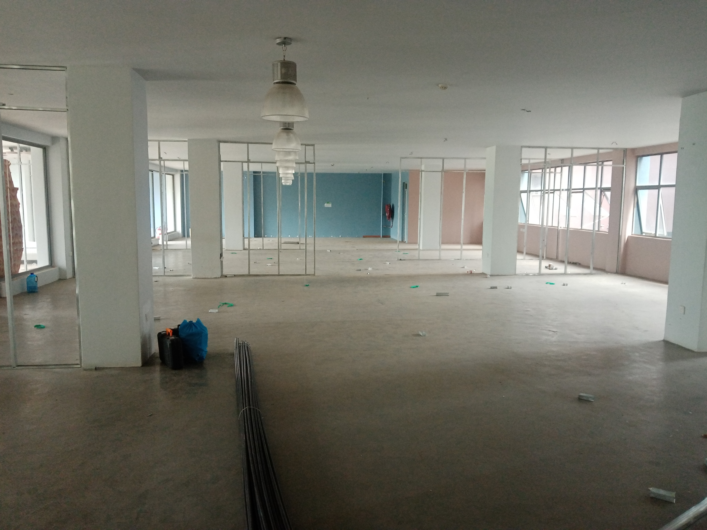
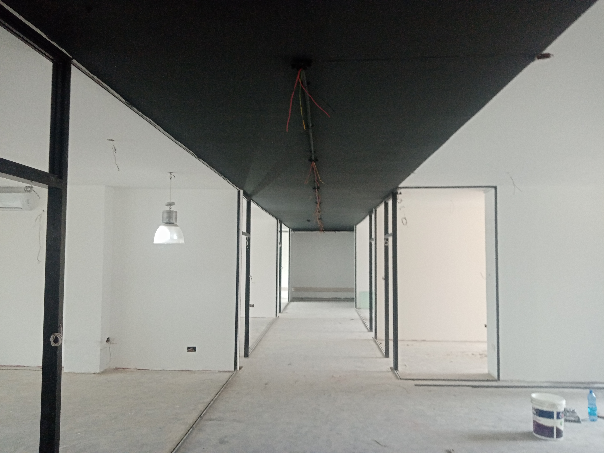
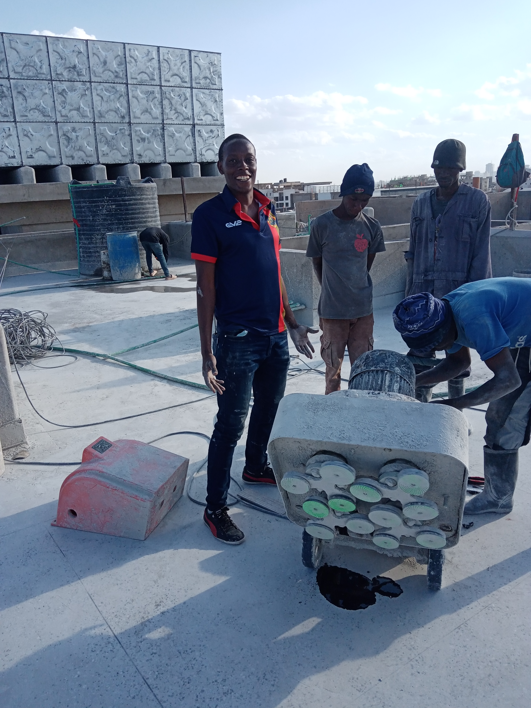
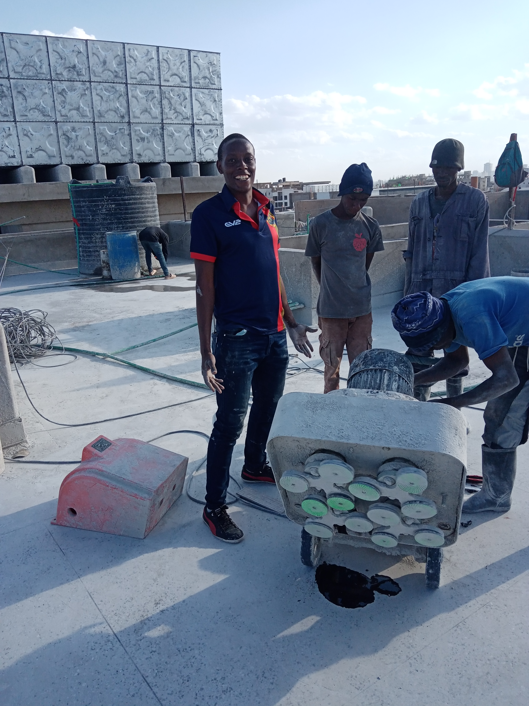

EMMANUEL OCHIENG OKELLO
I began my engineering journey in my second year of school during the internal workshop practice. This is where I first got a hands on feel with engineering. We visited some companies like Kenya Pipeline Company, Safaricom, Chemelil Sugar Company and Rivatex among others. During these trips we interacted with industry professionals and got to see how the relation of things we learrn in class apply in the field.
In my 4th year of school, I was attached at Kenya Power,Nairobi South, Donholm station. Here I got to work on power distribution systems. I got to gain some experience with power engineering. I was first scheduled with the Design and Construction department which was responsible for design and construction of power lines in different sections of Nairobi South. I was particularly impressed by my team leader, a bulky man who commanded his team like a 5 star general. He would notify us of the job we were to do while enroute to the site detailing everyones roles and splitting us into teams. This was very effective in terms of organization and morale of the work itself as often we would complete a single task in less than two hours then proceed to the next site. We once laid six spans of cable in less than an hour in a job site near Athi River. Despite being an attachee, I was very proud of our work that day.
In my 5th year of school, I went back to Kenya Power for my second attachment. This time I mostly worked with the Operation and Maintenance department. I got to see how maintenance of power lines is done, routinely taking observations of power lines to see their physical conditions, a skill that I have held onto even to this day. I really enjoyed my time with Kenya Power.
 

I worked as a freelance academic writer before landing an opportunity for an unpaid internship with Kings Electrical Enterprises in 2022. Here, I worked extensively as an electrician. Some of the the activities we undertook include;
- ✅ General electrical engineering works
- ✅Conduit works, layout, and fastening
- ✅Design, installation, repair, and maintenance of electrical systems and equipment
- ✅ Fault checking, testing of circuits, and troubleshooting electrical issues using appropriate testing devices.
- ✅Implementation of plans on site
- ✅Maintenance of regulatory and safety standards during working operations
- ✅Manage projects and deliver them on time
- ✅Collaboration with other professionals to ensure the success of the project
- ✅Help in coming up with a budget by giving insight into customer needs
We worked on some magnificent projects and delivered them with high levels of professionallism. Here are some of the projects
 



My internship with Kings Electrical Enterprises ended on 25th February 2024 and since then, I've been undertaking numerous projects as a freelance Graduate Electrical Engineer, here are some of the projects I've undertaken.
Here I am on a job wiring and installing a NZ200-7R5G/11P-4 motor drive for a floor compacting machine in Eastleigh, Nairobi

 

I also got the chance to work on a project at KEMSA, Embakasi in Nairobi. The project involved the installation of automatic doors for their cold rooms. We did a lot of troubleshooting on the systems and made them come online. We used a LOGO PLC to control the movements of some of the doors. Additionally, we installed a motion sensor to detect the presence of a person and open the door automatically. For some of the doors, we used drives from DANdoors company for their operations, programming them to open at speeds required by the client. The project was a success and the client was very happy with our work.
I was also privileged to work on an automation system for a kiln. This was the first project that I undertook as a freelance engineer that focused on programming rather than wiring. The project involved the automation of a kiln for a lumber company in Kiambu The kiln was used to treat wood and the client wanted to automate the process to reduce the amount of time spent on the process. We used a Siemens S7-1200 PLC to control the process. I contributed in the programming of the PLC.